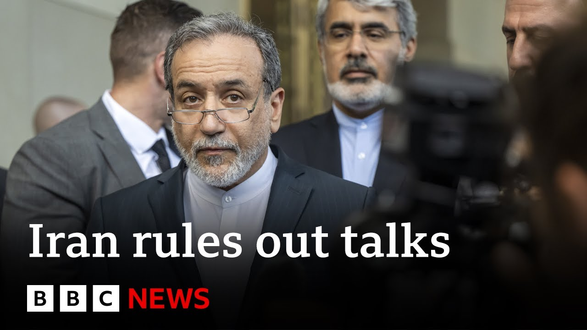

【伊朗外长警告美国介入将“非常危险”，以色列瞄准指挥官 | BBC新闻】
Summary: BBC News provides live coverage as the Israel-Iran conflict escalates, with both sides launching attacks against each other. Iran has fired missiles at Israel, while Israel has carried out airstrikes targeting Iranian missile facilities and military commanders. European nations have attempted diplomatic mediation, but were rebuffed by President Trump. Iran’s foreign minister stated that negotiations are impossible unless the bombings stop. The conflict has triggered an exodus of Iranian civilians, and the possibility of U.S. military involvement has raised concerns. A timeline released by U.S. intelligence agencies contradicts the President’s stance, sparking fears of political interference. Israel claims to have set back Iran’s nuclear program by two to three years, but further actions remain uncertain.
摘要： BBC新闻直播报道以色列与伊朗冲突升级，双方互相发动袭击，伊朗导弹袭击以色列，以色列则空袭伊朗导弹设施和军事指挥官。欧洲国家试图外交调解但遭特朗普拒绝，伊朗外长称除非停止轰炸否则无法谈判。冲突导致伊朗民众逃离，美国可能军事介入引发担忧。

⏱️ Estimated Reading Time: 21 min
📚 六级生词 📚 雅思生词 📚 托福生词 📚 专八生词 📚 SAT生词 📚 考研生词 📚 GRE生词 📚 高考生词
Hello and a very warm welcome to BBC News.
大家好，热烈欢迎收看BBC新闻。
I'm Mark Lohen.
我是马克·洛恩。
We're broadcasting live from Tel Aviv.
我们正在特拉维夫进行现场直播。
Air raids have sounded across Israel again overnight with its military saying that Iran fired five ballistic missiles through the night.
以色列全境夜间再次响起空袭警报，以军方称伊朗夜间发射了五枚弹道导弹。
While Israel's defense minister said a general in Iran's alsi had been killed in a targeted attack.
而以色列国防部长表示，伊朗伊斯兰革命卫队一名将军在定点袭击中丧生。
Well, we were woken at 2:30 a.m. when sirens sounded amid a barrage of Iranian missiles around the Tel Aviv area.
凌晨2:30，特拉维夫地区响起警报声，伊朗导弹密集袭来，我们被惊醒。
We all gathered in our bunker here in our hotel.
我们都聚集在酒店的地下掩体中。
This building in central Israel was reportedly set on fire by falling shrapnel from an Israeli interception missile, though the police say that they are still investigating the cause.
以色列中部一栋建筑据称被以色列拦截导弹的弹片引燃，但警方表示仍在调查原因。
Explosions were also heard close to the occupied West Bank.
被占领的约旦河西岸附近也传来爆炸声。
Israel's National Response Foundation said that there have been no reports of casualties.
以色列国家应急基金会表示尚无人员伤亡报告。
Meanwhile, Israel also launched a new wave of attacks against Iranian missile storage and launch infrastructure.
与此同时，以色列也对伊朗导弹储存和发射设施发动了新一波攻击。
Air defense systems were reportedly activated in areas of Tehran.
据报道，德黑兰部分地区启动了防空系统。
These are pictures released by the Israeli Defense Forces.
这些是以色列国防军发布的图片。
The Iranian media say that an attack on the nuclear site in Isvahan led to no leakage of hazardous material.
伊朗媒体称，伊斯法罕核设施遇袭未导致有害物质泄漏。
Meanwhile, on the diplomatic front, President Trump has dismissed efforts by European countries to deescalate tensions in the Middle East hours after the foreign ministers of the UK, France, and Germany met their Iranian counterpart in Geneva.
外交方面，在英国、法国和德国外长与伊朗外长日内瓦会晤几小时后，特朗普总统拒绝了欧洲国家缓解中东紧张局势的努力。
Mr. Trump told journalists that Iran wants to speak to the United States and Europe cannot help with this.
特朗普告诉记者，伊朗想与美国对话，欧洲对此无能为力。
Well, our chief international correspondent, Lee Ducet, has more on those talks in Geneva.
本台首席国际记者李·杜塞将带来日内瓦会谈的更多细节。
Well, it does seem uh that the pace of negotiations or the pace of talks in an effort to get negotiations back on track is uh slower than the pace of this war.
看起来，为恢复谈判而进行的磋商速度远慢于这场战争的节奏。
Overnight, Israel and Iran continued to attack each other.
昨夜，以色列和伊朗持续互相攻击。
The message we heard from European foreign ministers here yesterday, including the foreign secretary, David Lammy, was that there is this very narrow window now for diplomacy before President Donald Trump will look again at that military pan that he said to have approved and possibly order military strikes.
昨天包括外交大臣戴维·拉米在内的欧洲外长们表示，在特朗普总统重新考虑他已批准的军事计划并可能下令军事打击前，外交窗口期非常短暂。
And yes, it was a bit of an insult coming from President Trump, especially after David Lambi had taken an overnight flight from Washington to Geneva to convey directly face to face uh to Iran's foreign minister Abasaraki.
是的，特朗普总统的话有些侮辱性，特别是在戴维·拉姆比连夜从华盛顿飞往日内瓦，当面传达给伊朗外长阿巴萨拉基之后。
What David Lambi had heard from Marco Rubio, the US Secretary of State, from President Trump's envoy, that Iran had to come back to the table and negotiate a nuclear deal uh to significantly curb its nuclear ambitions.
戴维·拉姆比从美国国务卿马可·卢比奥和特朗普特使处获悉，伊朗必须重返谈判桌，通过核协议大幅限制其核野心。
But the message from Iran was we cannot negotiate when we are under Israeli attack.
但伊朗的回应是：在遭受以色列攻击时无法谈判。
Leus said in Geneva while Iran's foreign minister is now in Turkey to discuss the conflict between his country and Israel with representatives from Muslim majority countries around 40 diplomats from the organization of Islamic corporation are attending the meeting in Istanbul.
伊朗外长现已在土耳其，与来自伊斯兰合作组织的约40名外交官一起，与穆斯林国家代表讨论伊以冲突。
The Iranian foreign minister told journalists that there there that if Iran is to return to diplomacy, the bombing had to stop.
伊朗外长告诉记者，若要重返外交途径，轰炸必须停止。
He also said Iran believes the US has been involved in the conflict since the beginning.
他还表示伊朗认为美国自始至终都参与了冲突。
In order for us to come back to duty, the aggression should be stopped.
要让我们重返职责，侵略必须停止。
It is obvious.
这是显而易见的。
I cannot go to to negotiation with the United States when our people are under bombardment. under the support of the United States.
在我国人民遭轰炸时，我无法在美国支持下与美国谈判。
Uh we have come unfortunately to the conclusion that the United States has been in this aggression from the from the beginning.
不幸的是，我们得出结论：美国从一开始就参与了侵略。
You know they they deny they said they keep saying that they they are not involving but we have many indications that they have been involved from day one and now you know the the tweets interviews by the US president is quite clear that he's talking about the US leadership on this question.
他们不断否认参与，但我们有诸多迹象表明其从第一天就介入，而如今美国总统的推文和采访明确显示他在谈论美国对此事的主导。
Unfortunately, we have heard that the US may join this uh this aggression.
不幸的是，我们听闻美国可能加入这场侵略。
That would be very unfortunate and and I think that would be very very dangerous for everybody.
这将极其不幸，我认为对所有人都非常危险。
Well, meanwhile, Israel says that an Iranian drone has hit a building, a residential building in the northeast of Israel.
与此同时，以色列称伊朗无人机袭击了东北部一栋居民楼。
We can show you pictures that have been released uh of that attack.
我们可展示此次袭击的已公布画面。
It is the first time that an Iranian drone has made direct impact since the beginning of this conflict.
这是冲突爆发以来伊朗无人机首次直接造成破坏。
Let's bring in the BBC's Dan Johnson in Jerusalem.
现在连线BBC驻耶路撒冷的丹·约翰逊。
Dan, tell us more about what we what is known about the drone attack.
丹，请详细介绍已知的无人机袭击情况。
Yeah, that is a house in a town close to the border with Jordan.
那是靠近约旦边境小镇的一栋房屋。
The place is called Bet Shan and it is we believe the first time certainly in the week of this round of the conflict that a drone has actually got through and caused damage.
该地名为贝特谢安，我们相信这是本轮冲突一周来首例无人机突破防线造成破坏。
There's no report of any casualty there, but it does look like that drone, despite the Israeli air defense's attempt to shoot it down, did make it through and has caused some damage on the ground.
尚无伤亡报告，但尽管以军防空系统试图拦截，该无人机仍突破防线并造成地面破坏。
And it's not the only drone uh that has been launched towards Israeli airspace uh today.
这并非今日飞向以色列领空的唯一无人机。
A little ironic that the Israeli Defense Forces just earlier this morning were announcing that they had killed the Iranian Revolutionary Guard commander who was in charge of its drone unit.
颇具讽刺的是，以军今晨刚宣布击毙了伊朗革命卫队无人机部队指挥官。
Uh they were pleased to have removed that general from his position having killed him in an air strike, but it seems like his forces are still able to launch drone attacks towards Israel and one has got through this morning.
以军对空袭击毙该将军表示满意，但其部队似乎仍能向以色列发动无人机袭击，今晨就有一架突破防线。
Dan, you mentioned that Iranian drone commander who Israel says they've killed.
丹，你提到以色列宣称击毙的伊朗无人机指挥官。
Uh they also they say eliminated another commander from the Kuds force, a branch of the Iranian Revolutionary Guard.
以军还称消灭了伊朗革命卫队圣城旅的另一名指挥官。
Tell us more about him.
请详细介绍此人。
Yeah, there are actually two other members of the Revolutionary Guard that they announced this morning they have killed.
今晨以军宣布还击毙了革命卫队另外两名成员。
Uh Benim Shariari was in charge of weapons transfers, the Israelis say, between Iran and its proxies uh in Lebanon and in Gaza, Hezbollah and Hamas.
以方称贝尼姆·沙里亚里负责伊朗与黎巴嫩、加沙代理人真主党和哈马斯之间的武器转运。
and say I Isari they say was a key figure in organizing or at least being aware of and sanctioning the October the 7th attacks that were launched by Hamas from Gaza into Israel.
而赛义德·伊萨里是以方所称组织或至少知晓并批准哈马斯10月7日从加沙袭击以色列的关键人物。
They say he's someone who's been pivotal in providing funding and support for Hamas and they say that had been a key figure in developing Iranian plans to attack and destroy Israel.
以方称他是为哈马斯提供资金支持的核心人物，也是伊朗攻击摧毁以色列计划的关键制定者。
So they are highlighting him as a legitimate target and someone who they believe needed to be killed in order to reduce the Iranian threat towards Israel.
因此以方强调他是合法目标，认为必须击毙以削弱伊朗对以威胁。
But given that this round of conflict started with Israel saying that it was targeting Iran's nuclear program to eliminate the threat that it felt there was of Iran developing nuclear weapons.
但鉴于本轮冲突始于以色列声称其目标是伊朗核计划，以消除伊朗发展核武的威胁。
There are people questioning why this has now already expanded into effectively assassinations of military figures.
有人质疑为何现在已演变成实质性的军事人物暗杀。
This is certainly not the first time uh it's happened.
这绝非首次发生。
Uh, Israel has been using its intelligence network to pinpoint, locate, and kill a number of key figures in Iran's uh, military, but Iran is still able to launch attacks onto Israel.
以色列一直利用情报网络定位并击杀伊朗军方关键人物，但伊朗仍能对以发动攻击。
And it's not just the drones.
不仅是无人机。
We saw missile attacks overnight, although those were all successfully intercepted uh, in the last 24 hours, but we saw damage yesterday despite the Israeli effectiveness in taking out and attacking the Iranian missile launch sites.
过去24小时虽有导弹袭击均被成功拦截，但尽管以军有效打击了伊朗导弹发射场，昨日仍出现破坏。
Dan Johnson in Jerusalem.
耶路撒冷的丹·约翰逊报道。
Thanks very much indeed.
非常感谢。
Well, a little earlier I spoke to our South Caucus correspondent Rahan Dmitri who uh is on the Iranian Armenian border on the Armenian side.
稍早前我连线了南高加索记者拉汉·德米特里，她在伊朗-亚美尼亚边境亚方一侧。
She's in Mecci and she told us a little bit about the flow of people uh going across the border from Iran.
她在梅格里，向我们介绍了伊朗民众越境情况。
Well, Mark, I wouldn't describe it as a mass exodus, but there is definitely a a a regular flow of people coming out of Iran.
马克，我不认为这是大规模逃亡，但确实持续有人离开伊朗。
Uh we've spent this morning here and we're trying to approach all of the people that are coming through and uh these people well understandably they have very little trust in journalists.
今早我们在此试图接触所有过境者，可以理解他们对记者极不信任。
they are mainly kind of refusing to talk.
多数人拒绝交谈。
But those who are uh speaking to journalists, they uh have described one man was traveling from Isvahan and uh he said that there were explosions a couple of days ago that some soldiers were killed.
但愿意交谈者中，一名来自伊斯法罕的男子称几天前有爆炸致士兵死亡。
Um but he said that civilians were unarmed.
但他表示平民未携带武器。
We are seeing a lot of people who are traveling all the way from the Iranian capital.
我们看到许多从伊朗首都远道而来的人。
They're describing long hours up to 15 hours on roads to reach the border with Armenia.
他们描述长达15小时的车程抵达亚美尼亚边境。
Uh one man told us that uh there were no fuel shortages or bread shortages, but uh he said and it once again kind of we we've heard this account over and over again that Tehran uh appears to be largely uh deserted.
一名男子称德黑兰没有燃油或面包短缺，但我们反复听到的说法是德黑兰似乎基本空无一人。
Uh people those who could leave they left the capital.
能离开的人已离开首都。
They either travel to their summer houses or they travel to the border countries and are trying to leave the country via Kuwait, Iran, uh sorry, Iraq, uh Turkey or Armenia.
他们要么去度假屋，要么前往邻国，试图经科威特、伊拉克、土耳其或亚美尼亚离境。
And Rahen, you you talk about some of the places that they have come from.
拉汉，你提到他们来自的一些地方。
I mean, Isvahan a thousand kilometers from that border.
伊斯法罕距边境一千公里。
Uh Tehran 800 km.
德黑兰800公里。
These are massive distances.
距离非常遥远。
And of course, they're coming into a um an a southern Armenian border town of just 4 and a half thousand people.
而他们进入的亚美尼亚南部边境小镇仅4500人。
So, how are the authorities in Armenia coping with this uh with this influx of people?
亚美尼亚当局如何应对这波人流？
Well, uh none of the people that we've spoken with are planning to stay uh in this in the town of Mei um where we are based now.
我们接触的人都不打算留在我们所在的梅格里镇。
they are mainly traveling to the capital Yeravan and are getting flights out of uh Armenia.
他们主要前往首都埃里温，乘飞机离开亚美尼亚。
So the vast majority of people that have been coming through this border over the past uh couple of days that we've been reporting from here uh they are telling us that they have residency or citizenship in European countries or they have places uh outside Armenia where they can go where they have families and relatives.
过去几天过境者绝大多数告诉我们，他们拥有欧洲国家居留权或公民身份，或在亚美尼亚境外有亲友可投靠。
There are also uh quite a lot of ethnic Armenians that live in Thran and they are coming to Armenia to join their relatives and friends.
还有不少居住在德黑兰的亚美尼亚族人来亚美尼亚与亲友团聚。
But uh the authorities, the Armenian authorities are saying that uh um if the situation escalates, if there's really a a mass exodus, then they will be ready for that.
但亚美尼亚当局表示，若局势升级出现大规模逃亡，他们已做好准备。
They will help people with transportation to uh get them out of this border area.
将协助提供交通工具离开边境地区。
But at this stage, Mark, we're not seeing mass exodus of uh Iranians.
但目前马克，我们未看到伊朗人大规模逃亡。
Rahan Dmitri on the Armenian Iranian border.
亚美尼亚-伊朗边境的拉汉·德米特里报道。
Well, we've also been hearing from Mara Rudman, who is a former deputy envoy for Middle East peace at the US State Department.
我们还听取了美国国务院前中东和平副特使玛拉·拉德曼的见解。
I asked her whether there is still a diplomatic way forward which prevents the United States from joining this conflict.
我问她是否仍有外交途径可避免美国卷入冲突。
I think that there are still opportunities for a negotiated outcome here.
我认为仍有谈判解决的机会。
Uh if that's what you meant with your your uh question.
如果这是你问题的本意。
President Trump actually himself has said uh that he is in I think he has lined up uh the ability for the United States to join Israel to um on the offensive here in terms of uh making available the United States bunker buster bombing ability and the planes to fly them in.
特朗普总统本人已表示，我认为他已准备好让美国联合以色列进攻，提供美国的掩体炸弹和投放飞机。
But he has also been clear that he would like to see Iran agree to effectively the terms that he put out he and his team uh put out before Israel's preemptive actions in Iran.
但他也明确希望伊朗接受其团队在以色列对伊朗先发制人行动前提出的条件。
and that is that would have Iran agree to halt its nuclear enrichment activity and I'm sure agree to um to very strict inspections from the International Atomic Energy Association and the like.
即伊朗同意停止核浓缩活动，并接受国际原子能机构等严格核查。
But how dangerous a situation Mara do you believe that we are in when the US intelligence community and the head director of national intelligence is saying that uh it is their assessment that Iran is not currently weaponizing is not currently act uh actively building an atomic bomb and yet the president overrules her and sides with the Israeli intelligence community instead in instead.
但玛拉，当美国情报界和国家情报总监评估伊朗目前未在制造原子弹，而总统否决其意见转而支持以色列情报界时，你认为局势多危险？
So Mark, I'm not sure I agree with your characterization uh of what the US intelligence community has reported.
马克，我不完全认同你对美国情报界报告的表述。
I think the difference uh in reported uh views between the US intelligence community and that of Israel goes to a timeline question, not a whether uh Iran has the intent uh to continue enriching activity to the point of developing a nuclear weapon.
我认为美以情报界的分歧在于时间线，而非伊朗是否有意继续浓缩活动至发展核武。
So I think it's really important to be clear on that point.
因此明确这点非常重要。
The differences in timeline are key here and recall for many um earlier US administrations with respect to Iraq and decisions to go in.
时间线差异是关键，回顾此前多届美国政府对伊拉克的决策。
Uh and uh here the the views of the intelligence community, US intelligence community appear to be even more stark in terms of uh what they have allowed to be what they have released publicly on the timeline question.
美国情报机构的观点在时间线问题上公开的内容显得更为严峻。
It's a concern to me that the president of the United States that my president uh is discounting so publicly the views of his own intelligence community.
令我担忧的是，美国总统公开贬低自己情报机构的观点。
Uh that is a concern.
这确实令人担忧。
I've heard some Republican US senators frankly do the same.
我听到一些美国共和党参议员坦率地做了同样的事。
And that that's a real problem because US intelligence just like Israeli intelligence frankly is not politicized.
这是一个真正的问题，因为美国情报机构就像以色列情报机构一样，坦率地说，并未被政治化。
The people who work there and who do their work are not politicized.
在那里工作的人员并未被政治化。
They may have a variety of different views, but uh it's important for the leader of any country to be able to um respect the information given to him by his intelligence agencies.
他们可能有各种不同的观点，但任何国家的领导人都应尊重情报机构提供的信息。
Mara Rudman there, former deputy envoy for Middle East peace at the US State Department.
这是美国国务院前中东和平副特使玛拉·拉德曼的观点。
Meanwhile, Israel's foreign minister, Gideon Sar, has been quoted by the Israeli media as saying in the last few minutes or so that Israel believes that it has already set Iran's nuclear program back by a good two to three years.
与此同时，以色列媒体援引外长吉迪恩·萨尔的话称，以色列认为已使伊朗核计划倒退了两到三年。
The question as ever is whether Israel will go further and indeed whether it will manage to co-opt the United States into destroying Iran's nuclear program completely.
问题依然是以色列是否会进一步行动，甚至能否成功拉拢美国彻底摧毁伊朗的核计划。
that still very much up in the air and Donald Trump saying a decision will be made within the next couple of weeks.
这仍悬而未决，而唐纳德·特朗普表示将在未来几周内做出决定。
Don't forget you can always get much more on this story on our live page.
别忘了您可以在我们的直播页面上获取更多相关内容。
Go to bbc.com/news for minute-by-minute updates from our teams across the region and in the US and from BBC Persian as
请访问bbc.com/news，获取我们遍布该地区、美国及BBC波斯语团队的实时更新。